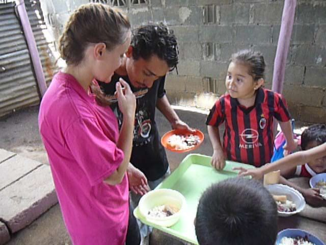
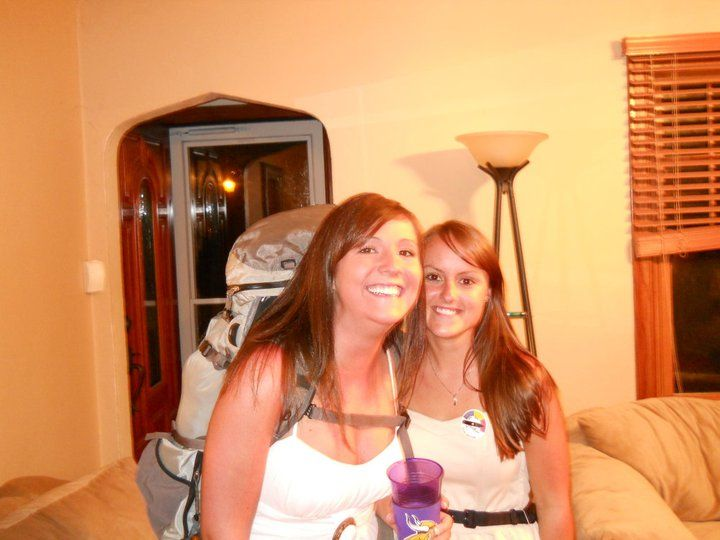
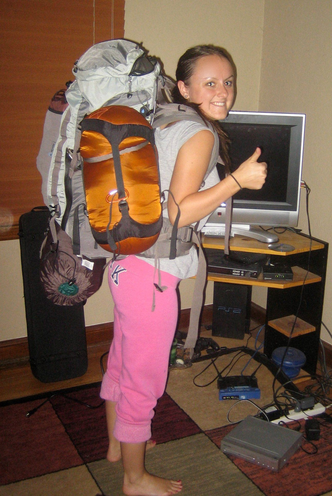
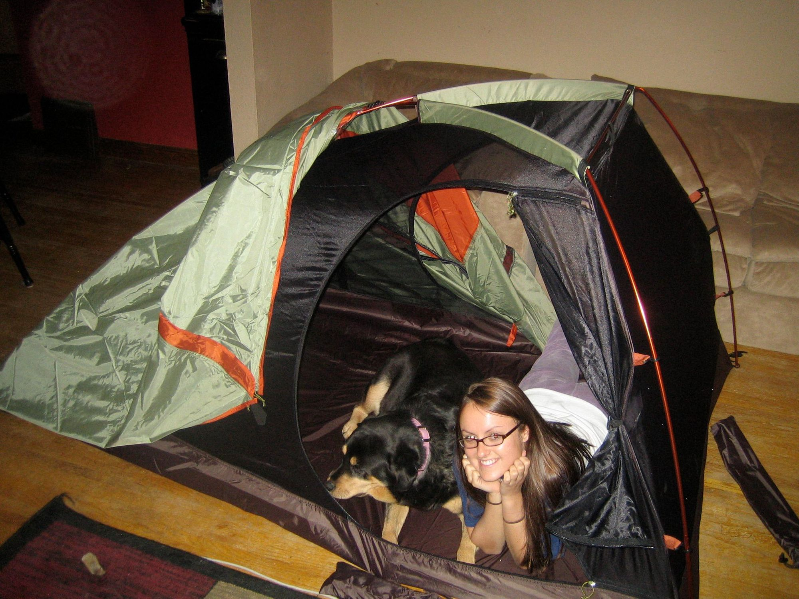

Having spent my Sunday mornings in college teaching Sunday school at a local mega church, I was sure I’d have the support from the campus pastor.
He was someone I had recently spent a week in Nicaragua with for a short-term mission trip. Staying in an orphanage, playing with kids, painting walls in classrooms.
It was during this trip that I visited La Chureca, the municipal domestic and industrial waste-disposal site in Managua, Nicaragua. Where as many as 2,000 informal waste pickers toiled to a sanitary landfill. (1)
While this 10 day trip was life-changing for me, I fear it may have done more harm than good for those we had gone to help.
Years later I would hear the term 'Missions Tourism' a theory I continue to wrestle with.

Returning from that trip with righteous indignation in my heart, I found my family not fully understanding. Because of this I knew I would need the support of my church family in my pursuit of a year away.
I reached out to my pastor several times. Sadly, my attempts went unanswered. I followed up with the small group leader I had been volunteering with for the past four years and was told I would have to talk to the ‘campus pastor.’ Figuring his silence was answer enough, I gave up.
I’d have to do this alone.
I remained hopeful that the leader of that volunteer group would follow up with me but they never mentioned it again.
Sadly, the community I was looking for, from a church that boasted the importance of that very thing, fell mute.
A possible answer to the question of why Jesus had his close community of only twelve disciples.
Two weeks later I decided to stop volunteering my time to them.
While my family slowly came around that summer, I began to find support in the community of friends I had built.
Not all of them would have called themselves Christians but they stepped up to the plate to support me both financially and emotionally with my dream to be a Missionary.

My friends helped me raise the $11,000 by assisting with car washes, garage sales and the selling of the majority of my belongings, including my car and the horse I loved.
I left feeling discouraged with the American Christian church, but hopeful with the community I had chosen to surround myself with, Christians and non-Christians alike.

On my first night of what would be close to a year away from home, I tried to fall asleep on the floor of a random cubical office building, a storm raging outside the window and inside my heart.

“Am I totally crazy for doing this? It feels like I prepared for the last days of my life, you know we probably won’t get to eat Taco Bell again for a year.”
The girl sleeping on the floor next to me looked at me silently before we both broke down laughing.
Through tears, we came to the conclusion that it was only a year and we got to love the world,
How BAD could it be?
Metaphysically it ended up being the most profound experience of my life.
In terms of physical harm, BAD was an understatement.
(1)
Chris Hartmann,
Waste picker livelihoods and inclusive neoliberal municipal solid waste management policies: The case of the La Chureca garbage dump site in Managua, Nicaragua,
Waste Management,
Volume 71,
2018,
Pages 565-577,
ISSN 0956-053X,
https://doi.org/10.1016/j.wasman.2017.10.008.
(http://www.sciencedirect.com/science/article/pii/S0956053X17307535)